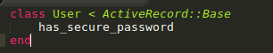

Salasanoja ei tallenneta tietokantaan selväkielisinä. Tavallista on, että salasanasta generoidaan yksisuuntainen hash eli tiiviste. Tiivisteestä ei pysty päättelemään salasanaa, mutta samasta salasanasta algoritmi generoi aina samanlaisen tiivisteen ja näin voidaan kirjautuessa tarkistaa, onko käyttäjän antama salasana oikea salasana. Otamme käyttöön BCrypt-kirjaston turvallisen salasanajärjestelmän luomiseen. Lisää Gemfileen
gem 'bcrypt', '~> 3.1.7'
ja aja
bundle install
Käyttäjään pitää lisätä password_digest-attribuutti, johon tiiviste sitten tallentuu tietokantaan. Tehdään se komennolla
rails g migration AddPasswordDigestToUser password_digest:string
Sen jälkeen User-model tulee saada näyttämään tältä, has_secure_password-metodin kutsumisen lisäys liittyy BCryptin toimintaan. Has_secure_password lisää User-olioon password ja password_confirmation-kentät. Jos näiden arvot eivät ole samat, Userin tallennus tietokantaan ei tule onnistumaan.

Ajetaan lopuksi tietokantamigraatiot komennolla
rake db:migrate